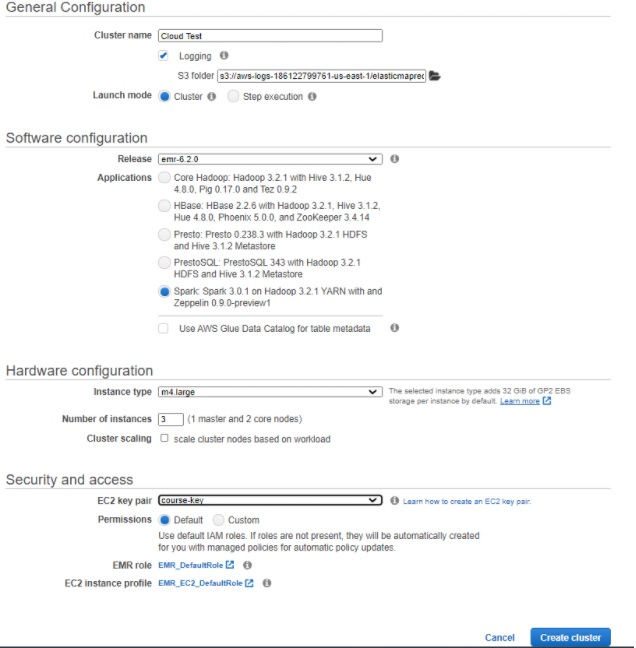
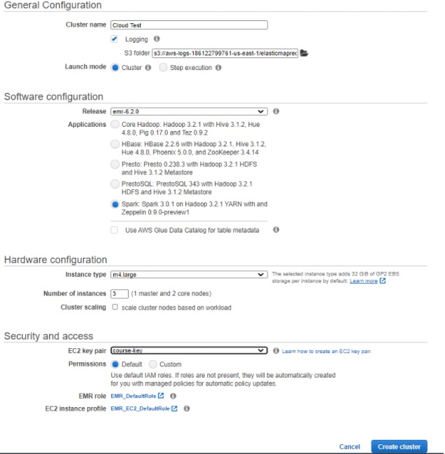

¿Cómo Funciona?
La aplicación consta de una serie de scripts de python, de los cuales, para hacerla funcionar, solo se ejecutará el que se llama main.py. Este es un script de python estándar que implementa una serie de menús que dan acceso a las distintas funcionalidades con las que cuenta la aplicación, las cuales están implementadas en el resto de ficheros de la carpeta scripts.
Una vez hayamos seleccionado qué funcionalidad de la aplicación queremos usar y hayamos introducido los parámetros y opciones necesarios para su funcionamiento, la aplicación generará automáticamente un ejecutable
execute.py, que se guardará también en la carpeta scripts, y también automáticamente la propia aplicación ejecutará unspark-submitcon dicho fichero como parámetro (llamando al sistema conpark-submit execute.py). Además opcionalmente se nos dará la opción de medir el tiempo que tarda en ejecutarse este script autogenerado de spark, ejecutándose, si es que queremos medir el tiempo, la ordenspark-submit execute.py.La aplicación generará varios objetos de salida por la ejecución de cada una de sus funcionalidades (es decir, cada vez que automáticamente genera un script y hace un
spark-submitdel mismo). Estos objetos se almacenarán en un directorio concreto para cada ejecución dentro de un directorio generalsaved_outputs. El directorio concreto de cada ejecución se llamaresults_yyyy-mm-dd_hh-mm-ss(donde yyyy-mm-dd y hh-mm-ss se corresponden, respectivamente, con la fecha y hora en la que se lanzó la ejecución de esa funcionalidad concreta). Dentro de ese directorio encontraremos dos subdirectorios más, llamadosgraphsyoutput, en los que encontramos las gráficas generadas y el dataframe obtenido (en formato csv) como resultado de la ejecución de cada utilidad de nuestra aplicación.
¿Cómo se Ejecuta?
La aplicación está pensada para poder ser ejecutada sin problema y de igual manera en cualquier entorno en el que se pueda hacer uso de Spark,
ya sea en una máquina local o en un cluster de Hadoop. Detallaremos a continuación los pasos a seguir para conseguir tener la aplicación
funcionando en ambos casos.
Selecciona "MODO LOCAL" o "CLUSTER DE HADOOP EN AWS"
-
Modo LOCAL
Requisitos
Para hacer funcionar nuestra aplicación en modo local será necesario que tengamos instalado en nuestra máquina
Java, Python, Spark y Scala. No se requiere ningún requisito especial para las distribuciones anteriores, aunque si se quiere usar la funcionalidad
de machine learning de nuestra aplicación es necesario contar con Spark-3.0.1.
La aplicación ha sido probada con éxito en una máquina local con Ubuntu 20.04, Python 3.8.5, Java OpenJDK 1.8.0_275, Spark 3.0.1 y Scala 2.11.12,
aunque no debería dar problemas con otras versiones siempre y cuando mantengamos para Spark la versión 3.0.1.
Los pasos que se exponen a continuación serían válidos para descargar la aplicación en una máquina con Ubuntu.
Si ya tenemos Spark-3.0.1 funcionando en nuestro sistema podemos saltarnos estos cuatro pasos previos de instalación.
Instalar Java
$ sudo apt-add-repository ppa:webupd8team/java
$ sudo apt-get update
$ sudo apt install openjdk-8-jdk
Instalar Scala
$ sudo apt-get install scala
Instalar Python
$ sudo apt-get install python
Instalar Spark 3.0.1
$ sudo curl -O https://ftp.cixug.es/apache/spark/spark-3.0.1/spark-3.0.1-bin-hadoop2.7.tgz
$ sudo tar xvf ./spark-3.0.1-bin-hadoop2.7.tgz
$ sudo mkdir /usr/local/spark
$ sudo cp -r spark-3.0.1-bin-hadoop2.7/* /usr/local/spark
A continuación añadimos spark a la ruta del PATH. En ~/.profile añadimos al final del fichero:
export PATH="$PATH:/usr/local/spark/bin
Ejecutamos a continuación
$ source ~/.profile
Si estamos en una máquina virtual en AWSdebemos añadir en el fichero /etc/hosts el hostname interno y nuestra IP. Si, por ejemplo,
nuestra IP es 172.30.4.210 debemos escribir en el fichero:
127.0.0.1 localhost
172.30.4.210 ip-172-30-4-210
Una vez hecho esto ya tendríamos Spark-3.0.1 funcionando en nuestro sistema.
Para hacer funcionar nuestra aplicación debemos seguir aún algunos pasos adicionales más:
En primer lugar, para poder utilizar las funcionalidades de generación de gráficas de la
aplicación es necesario tener instalada la biblioteca de Python Matplotlib. Para instalarla hacemos uso del administrador de paquetes de python, pip.
Si no lo tenemos instalado lo hacemos con:
$ sudo apt-get install python-pip
A continuación instalamos Matplotlib con:
$ pip install matplotlib
Una vez hecho esto es necesario indicar la ruta de nuestra instalación de Python en la variable PYSPARK_PYTHON. Para ello, nuevamente modificamos el fichero ~/.profile, añadiendo al final del mismo la línea:
export PYSPARK_PYTHON='/usr/bin/python'
Para actualizar su valor volvemos a ejecutar:
$ source ~/.profile
Con todo esto ya sí que tenemos nuestra máquina local lista para poder ejecutar la aplicación.
Para descargarla podemos hacerlo directamente desde el enlace de la web (nos descargará un zip únicamente con la parte de Application)
y descomprimiendo el archivo que se descarga o clonando este repositorio con la utilidad git, aunque si hacemos esto último hay que tener en cuenta
que sólo usaremos
la parte de Application (el resto se corresponde con el código fuente de la web).
Como ya se ha dicho antes, se accede a todas las funcionalidades de la aplicación ejecutando únicamente
el script main.py como un ejecutable estándar de python. Este script se encuentra en la carpeta scripts dentro
de la carpeta Application. Por ejemplo, si hemos clonado el repositorio en nuestro directorio local podemos ejecutar la aplicación con:
$ python ~/CovidAnalysis/Application/scripts/main.py
Una vez hecho esto nos aparecerá un menú inicial en el que debemos seleccionar la segunda opción,
ya que estamos ejecutando la aplicación con Spark sobre nuestra máquina local. A continuación debemos
indicar el paralelismo a nivel de sistema con el que queremos ejecutar nuestra aplicación en Spark,
esto es, el número de threads que se crearán y que realizarán las distintas tareas de manera distribuida.
Si introducimos un número mayor que 0 se crearán tantos hilos como hayamos especificado (master(local[N])
si hemos introducido que queremos N threads). Si introducimos 0 se nos crearán tantos threads como procesadores
lógicos tenga nuestra máquina (master(local[*])).
**********************
Where are you executing the application?
1.Hadoop Cluster
2.Local mode
**********************
Enter an option: 2
Select desired level of system parallelism, that is, the number of threads that you want to create
Enter 0 if you want to run spark with as many worker threads as logical cores on your machine
Enter a number: 0
-
CLUSTER DE HADOOP EN AWS
Podemos lanzar nuestra aplicación sobre un cluster de Hadoop, eligiendo Spark como aplicación y teniendo en cuenta que si queremos
utilizar las funcionalidades
de machine learning es necesario que el cluster cuente con Spark-3.0.1. Así, lanzamos el cluster en EMR (Elastic Map Reduce)
de AWS (Amazon Web Services) eligiendo las opciones:
- Release: emr-6.2.0
- Applications: Spark: Spark 3.0.1 on Hadoop 3.2.1 YARN with Zeppein 0.9.0-preview1
El número de instancias en el cluster y el tipo de estas instancias puede elegirse como se quiera, de hecho probamos
varias combinaciones para evaluar el rendimiento de nuestra aplicación en todas ellas. Un ejemplo de configuración de
cluster sobre el que funciona la aplicación sería el siguiente:

Una vez lanzado el cluster y cuando estemos conectados con él vía ssh, aún es necesario:
- Instalar la biblioteca de python matplotlib:
$ sudo pip3 install matplotlib
- Exportar la variable PYSPARK_PYTHON:
$ export PYSPARK_PYTHON='/usr/bin/python3'
Ahora ya podemos descargar la aplicación. Una manera de hacerlo es clonando este repositorio
(obendríamos todo el respositorio aunque solo vayamos a usar lo contenido en Application.
Para ello antes debemos instalar la utilidad git. Ejecutamos:
$ sudo yum install git
Para clonar el repositorio hacemos:
$ git clone https://github.com/Cloud2020Group4/CovidAnalysis.git
Ya podemos ejecutar nuestra aplicación, que, como ya se ha dicho, solo es necesario ejecutar el script main.py,
que se encuentra en la carpeta scripts dentro de la carpeta Application. Si hemos clonado el repositorio con git en ~/,
para ejecutar la aplicación basta con hacer:
$ python3 ~/CovidAnalysis/Application/scripts/main.py
Una vez ejecutada nos aparecerá un primer menú en el que debemos seleccionar la opción 1, pues vamos a lanzar Spark sobre un cluster de Hadoop.
A continuación debemos configurar el paralelismo a nivel de sistema con el que lanzaremos Spark, es decir, dar valor a los flags
--num-executors y --executor-cores que acompañan a spark-submit.
Primero se nos pedirá el número de nodos del cluster que queremos que realicen trabajos (--num-executors), y a continuación, el número de threads en cada trabajador (--executor-cores).
El valor máximo para el primero de los parámetros vendrá dado por el número de instancias que hemos lanzado como "worker nodes" y para el segundo de los parámetros por el número de cores
de cada instancia del cluster (por ejemplo, si hemos elegido instancias de m4.xlarge, podemos establecer un valor máximo de 4 para este segundo parámetro). Para ambos valores podemos
introducir 0 si no queremos darle valor a esos flags y la ejecución se realizará tratando de optimizar los recursos en el cluster.
Seguidamente se nos preguntará si queremos subir los datasets al Hadoop File System. La ejecución de Spark, al realizarse sobre distintos nodos, toma sus datos del sistema
de ficheros de Hadoop, común a todos los nodos, por lo que es necesario que los ficheros se encuentren ahí. Podemos hacer esto manualmente, pero para no tener que complicarnos,
la primera vez que ejecutemos la aplicación indicamos que sí que queremos subir los ficheros al HDFS y ya los tendremos ahí disponibles para todas las ejecuciones de la aplicación
que realicemos en el cluster.
**********************
Where are you executing the application?
1.Hadoop Cluster
2.Local mode
**********************
Enter an option: 1
Configure the system parallelism when running spark-submit
Select the value for the flag --num-executors (0 if you don't want to set it): 2
Select the value for the flag --executor-cores (0 if you don't want to set it): 4
Do you want to upload the datasets to Hadoop File System? (you must do it the first time you run the application)[y/n]: y
Updating datasets to Hadoop File System...
Updating ended...
¿Qué podemos hacer con la aplicación?
Una vez hayamos seguidos los pasos anteriores y hayamos ejecutado la aplicación
y configurado el paralelismo local, la aplicación nos mostrará el siguiente menú principal:
**********************
Menu
1.DOWNLOAD THE NEWEST DATASET WITH COVID-19 DATA
2.Covid-19 data
3.Economic data
4.Populational data
5.Health data
6.Machine Learning
7.Exit
**********************
Enter your choice:
La aplicación funciona con una serie de datasets. Uno de ellos (proporcionado por Our World in Data ) recoge los datos diarios de Covid-19 por países,
además de varios indicadores económicos, demográficos y de salud útiles para el estudio de la incidencia de la pandemia. Cuando descargas la aplicación
esta incluye una versión de este dataset desactualizada. Si queremos trabajar con los últimos datos disponibles (hasta el día anterior al que estamos)
debemos ejecutar la opción 1 y ya podremos trabajar con datos lo más actuales posible. Si estamos ejecutando en un cluster de Hadoop, al ejecutar esta
opción se actualiza también el fichero en el HDFS, por lo que no es necesario hacer nada más que seleccionar la opción en el menú.
Las opciones 2-6 dan acceso a las utilidades de la aplicación como tal. En todas ellas podemos ver valores de distintos indicadores de esa categoría,
obtener datos por países, elaborar listas con los mejores o peores países en un determinado aspecto, agregar datos por continentes o comparar resultados
para dos países, todo ello obteniendo los datos en un dataframe que se guardará en formato csv y en muchos de ellos con la opción también de representar
gráficamente esos datos.
Elaborar una gráfica comparando los casos diarios de covid-19 entre España y Portugal, ver la evolución de muertes por Covid-19 en Italia desde el día que empezó
su confinamiento hasta la finalización del mismo, obtener una lista de los países con más porcentaje anciano de población, comparar las facilidades para lavarse las
manos por continentes, obtener la opinión de la población de un país sobre la efectividad de las vacunas o ver si existe correlación entre el número de casos de Covid
en un país y su GDP con algoritmos de Clustering son algunas de las muchas opciones a las que se tienen acceso con esta aplicación. Simplemente, basta con seleccionar
qué queremos hacer en cada momennto entre las opciones disponibles y obtener los resultados. Aquí podemos ver unos ejemplos:
La aplicación muestra total flexibilidad y nos permite conseguir gran variedad de datos y gráficas útiles para un análisis de los mismos, pudiendo parametrizar por países,
fechas, indicadores...
La aplicación está pensada para poder ser ejecutada sin problema y de igual manera en cualquier entorno en el que se pueda hacer uso de Spark, ya sea en una máquina local o en un cluster de Hadoop. Detallaremos a continuación los pasos a seguir para conseguir tener la aplicación funcionando en ambos casos.
-
Modo LOCAL
Requisitos
Para hacer funcionar nuestra aplicación en modo local será necesario que tengamos instalado en nuestra máquina Java, Python, Spark y Scala. No se requiere ningún requisito especial para las distribuciones anteriores, aunque si se quiere usar la funcionalidad de machine learning de nuestra aplicación es necesario contar con Spark-3.0.1. La aplicación ha sido probada con éxito en una máquina local con Ubuntu 20.04, Python 3.8.5, Java OpenJDK 1.8.0_275, Spark 3.0.1 y Scala 2.11.12, aunque no debería dar problemas con otras versiones siempre y cuando mantengamos para Spark la versión 3.0.1. Los pasos que se exponen a continuación serían válidos para descargar la aplicación en una máquina con Ubuntu. Si ya tenemos Spark-3.0.1 funcionando en nuestro sistema podemos saltarnos estos cuatro pasos previos de instalación.
Instalar Java
$ sudo apt-add-repository ppa:webupd8team/java $ sudo apt-get update $ sudo apt install openjdk-8-jdkInstalar Scala
$ sudo apt-get install scalaInstalar Python
$ sudo apt-get install pythonInstalar Spark 3.0.1
$ sudo curl -O https://ftp.cixug.es/apache/spark/spark-3.0.1/spark-3.0.1-bin-hadoop2.7.tgz $ sudo tar xvf ./spark-3.0.1-bin-hadoop2.7.tgz $ sudo mkdir /usr/local/spark $ sudo cp -r spark-3.0.1-bin-hadoop2.7/* /usr/local/spark
A continuación añadimos spark a la ruta del PATH. En ~/.profile añadimos al final del fichero:
export PATH="$PATH:/usr/local/spark/binEjecutamos a continuación
$ source ~/.profileSi estamos en una máquina virtual en AWSdebemos añadir en el fichero /etc/hosts el hostname interno y nuestra IP. Si, por ejemplo, nuestra IP es 172.30.4.210 debemos escribir en el fichero:
127.0.0.1 localhost 172.30.4.210 ip-172-30-4-210Una vez hecho esto ya tendríamos Spark-3.0.1 funcionando en nuestro sistema.
Para hacer funcionar nuestra aplicación debemos seguir aún algunos pasos adicionales más:
En primer lugar, para poder utilizar las funcionalidades de generación de gráficas de la aplicación es necesario tener instalada la biblioteca de Python Matplotlib. Para instalarla hacemos uso del administrador de paquetes de python, pip.
Si no lo tenemos instalado lo hacemos con:$ sudo apt-get install python-pipA continuación instalamos Matplotlib con:
$ pip install matplotlibUna vez hecho esto es necesario indicar la ruta de nuestra instalación de Python en la variable
PYSPARK_PYTHON. Para ello, nuevamente modificamos el fichero~/.profile, añadiendo al final del mismo la línea:export PYSPARK_PYTHON='/usr/bin/python'Para actualizar su valor volvemos a ejecutar:
$ source ~/.profileCon todo esto ya sí que tenemos nuestra máquina local lista para poder ejecutar la aplicación. Para descargarla podemos hacerlo directamente desde el enlace de la web (nos descargará un zip únicamente con la parte de Application) y descomprimiendo el archivo que se descarga o clonando este repositorio con la utilidad
git, aunque si hacemos esto último hay que tener en cuenta que sólo usaremos la parte de Application (el resto se corresponde con el código fuente de la web).
Como ya se ha dicho antes, se accede a todas las funcionalidades de la aplicación ejecutando únicamente el scriptmain.pycomo un ejecutable estándar de python. Este script se encuentra en la carpeta scripts dentro de la carpeta Application. Por ejemplo, si hemos clonado el repositorio en nuestro directorio local podemos ejecutar la aplicación con:$ python ~/CovidAnalysis/Application/scripts/main.pyUna vez hecho esto nos aparecerá un menú inicial en el que debemos seleccionar la segunda opción, ya que estamos ejecutando la aplicación con Spark sobre nuestra máquina local. A continuación debemos indicar el paralelismo a nivel de sistema con el que queremos ejecutar nuestra aplicación en Spark, esto es, el número de threads que se crearán y que realizarán las distintas tareas de manera distribuida. Si introducimos un número mayor que 0 se crearán tantos hilos como hayamos especificado
(master(local[N])si hemos introducido que queremos N threads). Si introducimos 0 se nos crearán tantos threads como procesadores lógicos tenga nuestra máquina(master(local[*])).********************** Where are you executing the application? 1.Hadoop Cluster 2.Local mode ********************** Enter an option: 2 Select desired level of system parallelism, that is, the number of threads that you want to create Enter 0 if you want to run spark with as many worker threads as logical cores on your machine Enter a number: 0 -
CLUSTER DE HADOOP EN AWS
Podemos lanzar nuestra aplicación sobre un cluster de Hadoop, eligiendo Spark como aplicación y teniendo en cuenta que si queremos utilizar las funcionalidades de machine learning es necesario que el cluster cuente con Spark-3.0.1. Así, lanzamos el cluster en EMR (Elastic Map Reduce) de AWS (Amazon Web Services) eligiendo las opciones:
- Release: emr-6.2.0
- Applications: Spark: Spark 3.0.1 on Hadoop 3.2.1 YARN with Zeppein 0.9.0-preview1
El número de instancias en el cluster y el tipo de estas instancias puede elegirse como se quiera, de hecho probamos varias combinaciones para evaluar el rendimiento de nuestra aplicación en todas ellas. Un ejemplo de configuración de cluster sobre el que funciona la aplicación sería el siguiente:
Una vez lanzado el cluster y cuando estemos conectados con él vía ssh, aún es necesario:
- Instalar la biblioteca de python matplotlib:
- Exportar la variable PYSPARK_PYTHON:
$ sudo pip3 install matplotlib$ export PYSPARK_PYTHON='/usr/bin/python3'Ahora ya podemos descargar la aplicación. Una manera de hacerlo es clonando este repositorio (obendríamos todo el respositorio aunque solo vayamos a usar lo contenido en Application. Para ello antes debemos instalar la utilidad git. Ejecutamos:
$ sudo yum install gitPara clonar el repositorio hacemos:
$ git clone https://github.com/Cloud2020Group4/CovidAnalysis.gitYa podemos ejecutar nuestra aplicación, que, como ya se ha dicho, solo es necesario ejecutar el script main.py, que se encuentra en la carpeta scripts dentro de la carpeta Application. Si hemos clonado el repositorio con git en ~/, para ejecutar la aplicación basta con hacer:
$ python3 ~/CovidAnalysis/Application/scripts/main.pyUna vez ejecutada nos aparecerá un primer menú en el que debemos seleccionar la opción 1, pues vamos a lanzar Spark sobre un cluster de Hadoop. A continuación debemos configurar el paralelismo a nivel de sistema con el que lanzaremos Spark, es decir, dar valor a los flags
--num-executorsy--executor-coresque acompañan a spark-submit.
Primero se nos pedirá el número de nodos del cluster que queremos que realicen trabajos (--num-executors), y a continuación, el número de threads en cada trabajador (--executor-cores). El valor máximo para el primero de los parámetros vendrá dado por el número de instancias que hemos lanzado como "worker nodes" y para el segundo de los parámetros por el número de cores de cada instancia del cluster (por ejemplo, si hemos elegido instancias de m4.xlarge, podemos establecer un valor máximo de 4 para este segundo parámetro). Para ambos valores podemos introducir 0 si no queremos darle valor a esos flags y la ejecución se realizará tratando de optimizar los recursos en el cluster.
Seguidamente se nos preguntará si queremos subir los datasets al Hadoop File System. La ejecución de Spark, al realizarse sobre distintos nodos, toma sus datos del sistema de ficheros de Hadoop, común a todos los nodos, por lo que es necesario que los ficheros se encuentren ahí. Podemos hacer esto manualmente, pero para no tener que complicarnos, la primera vez que ejecutemos la aplicación indicamos que sí que queremos subir los ficheros al HDFS y ya los tendremos ahí disponibles para todas las ejecuciones de la aplicación que realicemos en el cluster.********************** Where are you executing the application? 1.Hadoop Cluster 2.Local mode ********************** Enter an option: 1 Configure the system parallelism when running spark-submit Select the value for the flag --num-executors (0 if you don't want to set it): 2 Select the value for the flag --executor-cores (0 if you don't want to set it): 4 Do you want to upload the datasets to Hadoop File System? (you must do it the first time you run the application)[y/n]: y Updating datasets to Hadoop File System... Updating ended...
Una vez hayamos seguidos los pasos anteriores y hayamos ejecutado la aplicación y configurado el paralelismo local, la aplicación nos mostrará el siguiente menú principal:********************** Menu 1.DOWNLOAD THE NEWEST DATASET WITH COVID-19 DATA 2.Covid-19 data 3.Economic data 4.Populational data 5.Health data 6.Machine Learning 7.Exit ********************** Enter your choice:La aplicación funciona con una serie de datasets. Uno de ellos (proporcionado por Our World in Data ) recoge los datos diarios de Covid-19 por países, además de varios indicadores económicos, demográficos y de salud útiles para el estudio de la incidencia de la pandemia. Cuando descargas la aplicación esta incluye una versión de este dataset desactualizada. Si queremos trabajar con los últimos datos disponibles (hasta el día anterior al que estamos) debemos ejecutar la opción 1 y ya podremos trabajar con datos lo más actuales posible. Si estamos ejecutando en un cluster de Hadoop, al ejecutar esta opción se actualiza también el fichero en el HDFS, por lo que no es necesario hacer nada más que seleccionar la opción en el menú.
Las opciones 2-6 dan acceso a las utilidades de la aplicación como tal. En todas ellas podemos ver valores de distintos indicadores de esa categoría, obtener datos por países, elaborar listas con los mejores o peores países en un determinado aspecto, agregar datos por continentes o comparar resultados para dos países, todo ello obteniendo los datos en un dataframe que se guardará en formato csv y en muchos de ellos con la opción también de representar gráficamente esos datos.
Elaborar una gráfica comparando los casos diarios de covid-19 entre España y Portugal, ver la evolución de muertes por Covid-19 en Italia desde el día que empezó su confinamiento hasta la finalización del mismo, obtener una lista de los países con más porcentaje anciano de población, comparar las facilidades para lavarse las manos por continentes, obtener la opinión de la población de un país sobre la efectividad de las vacunas o ver si existe correlación entre el número de casos de Covid en un país y su GDP con algoritmos de Clustering son algunas de las muchas opciones a las que se tienen acceso con esta aplicación. Simplemente, basta con seleccionar qué queremos hacer en cada momennto entre las opciones disponibles y obtener los resultados. Aquí podemos ver unos ejemplos:
La aplicación muestra total flexibilidad y nos permite conseguir gran variedad de datos y gráficas útiles para un análisis de los mismos, pudiendo parametrizar por países, fechas, indicadores...